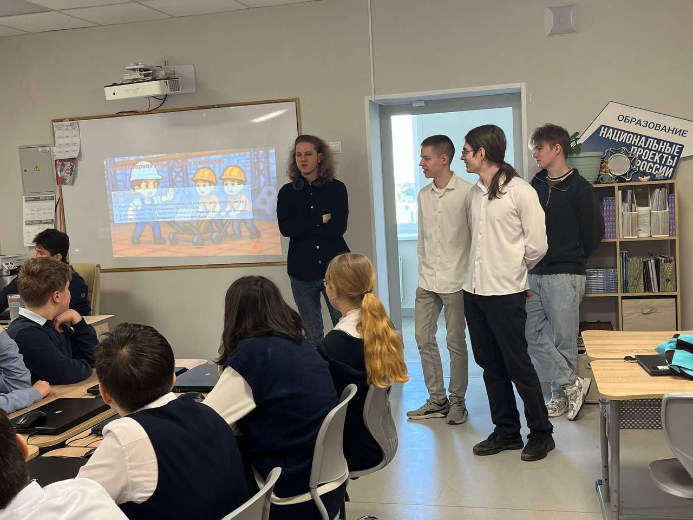
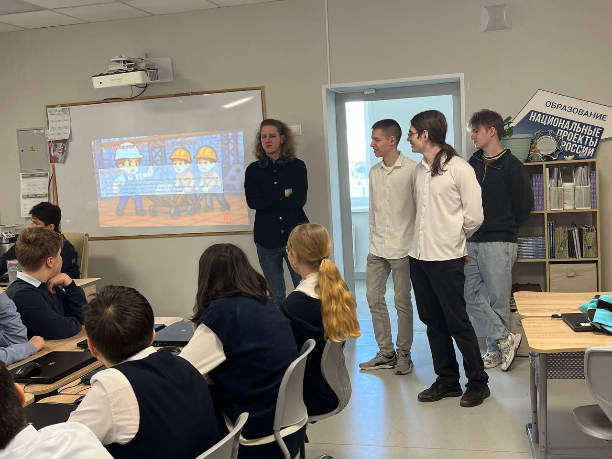

18.02.2025 - Объявление старта разработки компьюторной игры "Safety madness"
Мных Ян предложил идею создания игры и произвел отбор участников. Был создан телеграмм канал для связи с командой и совместно с остальными участниками была начата разработка игры.
14.04.2025 - Первый отчет о работе руководителям проекта охрана труда
Мных Ян на учебном занятии впервые представил концепт игры "Safety Madness". Были продемонстрированы: Сюжет, локации, эветны, персонаж.
21.04.2025 - Демонстрация демо-версии игры
Мных Ян совместно с командой презентовал и продемонстрировал демо-версию игры на занятии по проектной деятельности. Получилось показать геймплей игры и дать опробовать геймплей руководителям.
28.04.2025 - 05.05.2025 - Проведение апробации
Cостоялись две апробации. Первую совместно с командой Мных Ян провел для учащихся 7а и 7в классов Домодедовской средней общеобразовательной школы № 2 имени М. Д. Глазова. Где рассказали учащимся о проектной деятельности и других аспектах учёбы в Московском Политехе, а также представили демоверсию игры "Safety Madness", разработанную как раз в рамках проектной деятельности. Вторую провёл лично Мных Ян для учащихся 10а класса той же школы.
 
